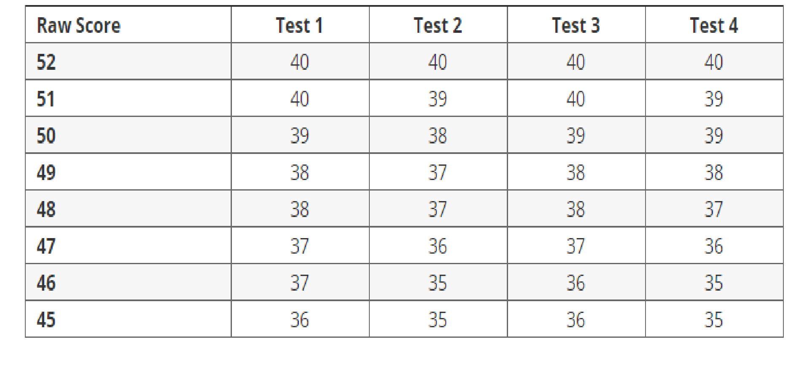

This is the hybrid template for those who prefer balanced combination between videos/pictures and texts. This is a watered down version of the actual scope of Particeps
In the future, we hope to develop this product and this template to further improve and accomodate our users. This is an intellectual property of the Sketchers.
SAT format: the basics of its format
What is SAT? Watch the video below to find out
Reading
SAT reading part is the hardest out of all the three part of the Scholastic Aptitude test. SAT reading usually features excerpts from scientific journals,
literary novels, and opinon pieces. These passages usually contain jargons and advanced vocabulary. Careful reclycing of hard words and reading between
the lines for this part are crucial.
SAT reading almost always has 4 reading passages with 52 questions. The questions involve general messages from the authors,
usages of literary devices, and synonyms as well as antonyms. It is important that learners tackles the specific questions
pertaining to individual paragraphs of the passage before doing inferences or main message questions.
As stated above there are 52 questions in SAT reading divided into 4 brackets of 10 questions for each passage. The marking rubric
is presented in the picture below:

Writing
SAT writing introduce a look into how grammar and good writing are introduced in novels or professional writing.
SAT writing contains two main features: grammar or sentence correction and paragraph-sentence order or insertion.
SAT writing consists of 4 passages, each containing 11 questions, totaling a 44-question session.
An example of SAT writing is shown below in the picture:
Math (with and without Calculator)
SAT Math is the easiest part of the Scholastic Apptitude Test, if you know your high school math.
The current SAT math format is divided into two sections: one that allows the use of calculators and one that does not.
To find out what the SAT math asks of you and how they are structured, watch the video below:
SAT optional essay
This part is optional, but is recommended to be completed. This image below show how this part should be outlined and done